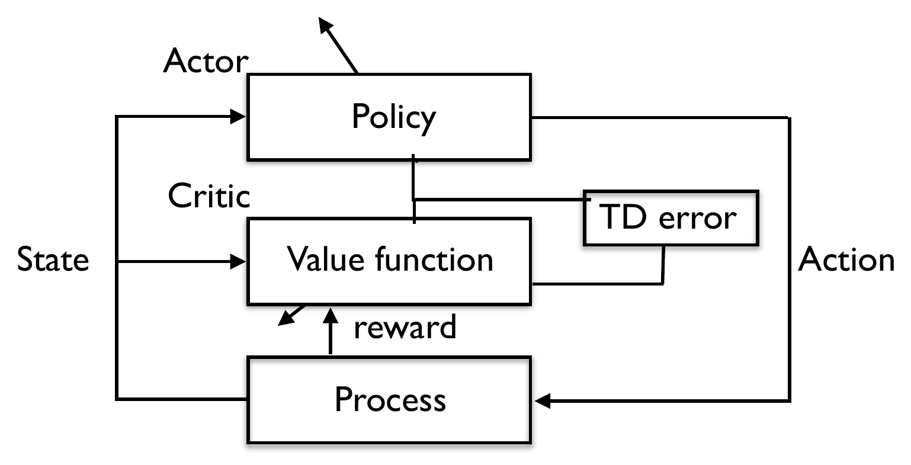

Unit 14 – State-of-the-Art Methods: TRPO, PPO and Soft Actor-Critic
4SC000 Optimal Control and Reinforcement Learning
1 Where this unit sits in the course
Units 10 to 13 built reinforcement learning from the ground up, and by the end of Unit 13 all of the structural ideas were in place: Q-factors and Q-learning, policy iteration and SARSA, function approximation and deep Q-learning, the policy gradient theorem, REINFORCE, baselines and the actor-critic. What was not in place was the engineering. Unit 13’s mountain car made the point concretely – a correct implementation of a correct algorithm converged, quickly and confidently, to a policy that does nothing.
This unit is about the methods that practitioners actually reach for, and about the two specific repairs that separate them from the textbook algorithms. Both repairs address failures already met:
- Trust region methods – TRPO and PPO – limit how far a single policy update may move. The policy gradient is a local object, and Unit 13’s warning that these methods “require careful tuning of the learning rate” is the symptom; constraining the step is the cure.
- Soft actor-critic adds an explicit reward for keeping the policy random. This is exactly the exploration collapse the mountain car exhibited, named and priced into the objective rather than patched afterwards.
Everything here is a variant of the actor-critic of Unit 13. The names differ, the engineering differs, but the architecture is the same one.

The methods of this unit – PPO, TRPO, SAC, and also DDPG (deep deterministic policy gradient) and TD3 (twin-delayed DDPG), which the course does not cover – are all closely related to Fig. 1. One family that is genuinely different, model-based reinforcement learning, combines model-based and data-based ideas; it is outside the scope of the course.
A warning that runs through the whole unit. These three algorithms are stated here, as everywhere in this course, for a cost that is minimised. Their original papers maximise a reward, and the translation is not merely a change of symbol: an objective loses a minus sign, a minimum becomes a maximum, and an entropy bonus that is added becomes one that is subtracted. Each is flagged where it occurs. If you open the papers – and you should – expect the mirror image.
2 Working with the MATLAB toolbox
A practical remark before the methods. Every algorithm in this unit has many hyperparameters and is hard to train from scratch; a first encounter with them is much more productive through an implementation that is known to work. MATLAB’s Reinforcement Learning Toolbox is what this unit uses, because it ships with trained examples.
The toolbox’s agents divide neatly into those the course has already built by hand and those it has not. The first group:
| Agent | Toolbox section | In this course |
|---|---|---|
| Q-Learning | 3-19 | Unit 10 |
| SARSA | 3-22 | Unit 11 |
| LSPI | 3-25 | — (related to LSTD, Unit 12) |
| Deep Q-Network (DQN) | 3-29 | Unit 12 |
| REINFORCE Policy Gradient (PG) | 3-34 | Unit 13 |
| Actor-Critic (AC) | 3-40 | Unit 13 |
and the second:
| Agent | Toolbox section | In this course |
|---|---|---|
| Proximal Policy Optimization (PPO) | 3-45 | this unit |
| Trust Region Policy Optimization (TRPO) | 3-51 | this unit |
| Deep Deterministic Policy Gradient (DDPG) | 3-59 | — |
| Twin-Delayed Deep Deterministic (TD3) Policy Gradient | 3-64 | — |
| Soft Actor-Critic (SAC) | 3-70 | this unit |
| Model-Based Policy Optimization (MBPO) | 3-78 | — |
The toolbox allows custom environments to be built and ships with many pre-built ones, especially control-related. A custom environment needs only three pieces, which map exactly onto the course’s notation: a step function, which is the dynamics \(f_k\); a reset function, which draws the initial condition; and a reward, which is the negative of the cost \(g_k\). The state space may be discrete or continuous. The drawback worth naming is that the toolbox’s generative AI tooling is not close to what is available elsewhere, for instance VS Code with Copilot.
3 Trust region methods
3.1 Why the policy gradient step needs a leash
The policy gradient theorem gives the exact derivative of the cost with respect to the policy parameters, and REINFORCE and the actor-critic estimate that derivative from data. A derivative, however, is a purely local object: it describes the cost in an infinitesimal neighbourhood of the current parameters, and says nothing about what happens a finite distance away. Two consequences follow, and both are familiar from Unit 13.
The first is that a large update can change the policy distribution radically even when it changes the parameters only slightly. A soft-max policy whose preferences shift by a modest amount can go from nearly uniform to nearly deterministic; the parameter step was small, the behavioural step was not. The second is that the policy gradient objective carries no guarantee of improvement at all. Descending a gradient by a finite step can increase the cost, and in reinforcement learning the data for the next step then comes from the worse policy, so there is no mechanism that pulls the iteration back.
Trust region methods address both by changing what “small step” means. Improvement should be local in distribution space, not in parameter space – the quantity to be kept small is a distance between the old policy and the new one, not a distance between \(\theta_k\) and \(\theta_{k+1}\). On top of that, the actual step length is chosen by a line search that verifies improvement rather than assuming it.
TRPO implements this directly. It is complex and has many hyperparameters, which is why PPO – a simplification of the same idea, with fewer – is what is used in practice. Both are treated here, TRPO first because PPO only makes sense as a response to it.
3.2 TRPO: the optimization problem
Central to TRPO is an optimization problem solved once per batch of data. Suppose a batch \((x_i,u_i)\), \(i\in\{1,\dots,M\}\), has been generated by the current policy, written \(\pi_{\text{old}}\). TRPO then solves
\[\min_\theta L(\theta), \qquad L(\theta)=\frac{1}{M}\sum_{i=1}^M\left[\frac{\pi_\theta(u_i\mid x_i)}{\pi_{\text{old}}(u_i\mid x_i)}A_{\pi_{\text{old}}}(x_i,u_i)\right]\]
subject to
\[\frac{1}{M}\sum_{i=1}^M\big[D_{\text{KL}}\big(\pi_{\theta_{\text{old}}}(\cdot\mid x_i)\,\|\,\pi_\theta(\cdot\mid x_i)\big)\big]\le\delta,\]
where \(\theta\) are the parameters of the new policy, \(\pi_\theta(u\mid x)\) and \(\pi_{\text{old}}(u\mid x)\) are the probabilities the new and old policies assign to action \(u\) at state \(x\),
\[A_{\pi}(x,u)=Q_{\pi}(x,u)-J_{\pi}(x)\]
is the advantage function of Unit 13, and \(D_{\text{KL}}\) is the Kullback-Leibler divergence between the two policies.
Read the objective first. The advantage \(A_{\pi_{\text{old}}}(x_i,u_i)\) is negative for actions that cost less than the old policy’s average and positive for those that cost more. Minimising \(L\) therefore raises the ratio \(\pi_\theta/\pi_{\text{old}}\) on the good actions and lowers it on the bad ones – which is policy improvement, written in terms of how much the new policy would have liked the old policy’s data. The whole expression is evaluated on data that the new policy did not generate, and the ratio is what makes that legitimate: it is the importance sampling weight of Unit 11, in its third appearance in this course.
Now read the constraint. Importance sampling is only trustworthy while the two distributions are close; when they are not, the estimate becomes dominated by a few samples with enormous weights, exactly as Unit 11’s off-policy estimators did. The KL constraint bounds precisely that discrepancy. So the two halves of the problem are not independent pieces of machinery bolted together: the constraint is what makes the objective mean anything.
Intuitively, then: optimize the advantage using the old policy’s data and an importance sampling ratio, subject to the new policy’s distribution staying not far from the old one. That region is the trust region.
The slides write \(L\) with a leading minus sign and then minimise it, which is the form used in the original papers. Those maximise a reward, where a good action has a positive advantage. This course minimises a cost, where a good action has a negative advantage, so the minus must go. The same applies to the PPO objective below, where it also turns a minimum into a maximum. The mathematics is identical; only the direction of “good” differs.
The fraction \(\pi_\theta(u_i\mid x_i)/\pi_{\text{old}}(u_i\mid x_i)\) has appeared twice already in this course, in different guises. Name both. Then say what their common failure mode is, and which part of the TRPO problem is designed to prevent it.
It first appeared in Unit 11 as the importance sampling weight, which lets data collected under a behaviour policy be used to estimate the value of a different target policy: \(\rho=\prod_k\pi(u_k\mid x_k)/\mu(u_k\mid x_k)\). It appeared again in Unit 13, differentiated, as \(\nabla_\theta\pi/\pi=\nabla_\theta\log\pi\) in the REINFORCE update – the same quotient, obtained there by multiplying and dividing by the policy’s own probability.
The common failure mode is variance. A ratio with a probability in the denominator is unbounded: a rarely-taken action under the old policy that the new policy favours produces a huge weight, and a handful of such samples dominate the whole average. Unit 11 saw this as the gap between ordinary and weighted importance sampling; Unit 13 saw it as the second of the two sources of REINFORCE’s variance.
The KL constraint is the part of the TRPO problem that prevents it. Bounding \(D_{\text{KL}}(\pi_{\text{old}}\,\|\,\pi_\theta)\) bounds how different the two distributions can be, and hence how large the ratios can get. Note the direction of the divergence: it penalises \(\pi_\theta\) being small where \(\pi_{\text{old}}\) is not, which is exactly the configuration that produces a large weight. The trust region is a variance control, not only a safety device.
3.3 TRPO in practice
The constrained problem above is not solved exactly. In practice the objective is approximated linearly and the constraint quadratically, both around the current parameters, and the resulting search direction is
\[\theta_{k+1}=\theta_k-\alpha F^{-1}g,\]
where \(g\) is the gradient of the cost, \(F\) is a matrix that improves the directionality of that gradient – it is the Fisher information matrix of the policy, the quadratic form that the KL constraint reduces to near \(\theta_k\) – and \(\alpha\) is a step length picked by line search.
Two remarks on that expression. First, \(\alpha\) here is a step size and has nothing to do with the discount factor, which is written \(\alpha\) everywhere else in this course; the clash is standard in the TRPO literature and is kept so that these notes match the sources. Second, the line search is doing real work: it is what guarantees both that the new parameters are better than the old ones and that the constraint is actually met, neither of which the linear-quadratic approximation can promise by itself. An update that fails the test is simply shortened until it passes.
Note also what the trust region does not cover. It applies only to the policy, not to the value or advantage function – the critic. For the critic, the methods of Units 11 and 12 apply unchanged: a Monte-Carlo target or a semi-gradient TD target, the same trade between an unbiased noisy estimate and a biased quiet one. The original TRPO paper uses a more elaborate scheme, but nothing in the method requires it.
3.4 The algorithm
Initialize the policy parameters \(\theta\) and the value function parameters \(\phi\). Then repeat:
- Collect trajectories using \(\pi_\theta\).
- Estimate the advantages \(A_t\).
- Compute the policy gradient \(g\) and the matrix \(F\).
- Compute the search direction by conjugate gradient.
- Line search, to satisfy the KL constraint.
- Update the policy parameters, \(\theta\leftarrow\theta-\alpha F^{-1}g\).
- Update the value/advantage function parameters \(\phi\).
Step 1 is worth dwelling on, because two of TRPO’s defining properties follow from it alone. Because the trajectories are collected under the very policy being improved, TRPO is an on-policy method, like SARSA in Unit 11 and unlike Q-learning. And because a whole batch must be collected before a single policy update can be made, it is sample-inefficient: every sample is used once, for one step, and then discarded. Deep Q-learning’s replay buffer, which reuses each transition many times, is not available here – the ratio in the objective is only valid for data drawn under \(\pi_{\text{old}}\), and a buffer holds data from policies that are older still.
The critic parameters are written \(\phi\) here, where Unit 13’s deck wrote \(\alpha_k\) for the same thing. \(\phi\) is the better symbol and these notes use it; the two sources have not yet been reconciled.
4 PPO
4.1 Clipping instead of a constraint
TRPO is a complex algorithm. Its original form carries genuine guarantees of policy improvement, which is a real achievement, but the price is a conjugate-gradient solve, a Fisher matrix and a line search inside every iteration. Proximal Policy Optimization keeps the idea and throws away the machinery.
PPO solves, over the same kind of batch generated by \(\pi_{\theta_{\text{old}}}\),
\[\min_\theta L(\theta), \qquad L(\theta)=\frac{1}{M}\sum_{i=1}^M\big[\max\big(r_i(\theta)A_{\pi_{\text{old}}}(x_i,u_i),\;c_i(\theta)A_{\pi_{\text{old}}}(x_i,u_i)\big)\big],\]
where
\[r_i(\theta)=\frac{\pi_\theta(u_i\mid x_i)}{\pi_{\theta_{\text{old}}}(u_i\mid x_i)}, \qquad c_i(\theta)=\max\big(\min(r_i(\theta),1+\epsilon),1-\epsilon\big).\]
The quantity \(c_i(\theta)\) is simply \(r_i(\theta)\) clipped to the interval \([1-\epsilon,1+\epsilon]\). There is no constraint anywhere: the problem is unconstrained, and the trust region is enforced implicitly, by the fact that the objective stops rewarding the optimizer once the ratio has left that interval in the direction the advantage favours.
That last clause is the whole trick, and it is worth working out rather than taking on faith.
Fix one sample and drop the index, so the term is \(\max\big(rA,\,cA\big)\) with \(c\) the clip of \(r\) to \([1-\epsilon,1+\epsilon]\). Take \(\epsilon=0.2\). For each sign of the advantage \(A\), work out which of the two arguments the maximum selects when \(r=0.5\) and when \(r=1.5\), and in which of those four cases the term has zero derivative with respect to \(r\). Then say in one sentence what the clipping permits and what it forbids.
With \(\epsilon=0.2\), \(c=0.8\) when \(r=0.5\) and \(c=1.2\) when \(r=1.5\).
Good action, \(A<0\). The map \(x\mapsto xA\) is decreasing, so the maximum picks the smaller of \(r\) and \(c\). At \(r=0.5\) that is \(r\) itself, and the term is \(rA\) with derivative \(A\ne0\) – live. At \(r=1.5\) it is \(c=1.2\), and the term is the constant \((1+\epsilon)A\), with derivative zero.
Bad action, \(A>0\). The map is increasing, so the maximum picks the larger. At \(r=1.5\) that is \(r\), term \(rA\), derivative live. At \(r=0.5\) it is \(c=0.8\), term \((1-\epsilon)A\), derivative zero.
Collecting the four cases:
| \(r=0.5\) | \(r=1.5\) | |
|---|---|---|
| \(A<0\) (good action, optimizer wants \(r\) up) | live | clipped |
| \(A>0\) (bad action, optimizer wants \(r\) down) | clipped | live |
The pattern is exact and not symmetric by accident. The derivative vanishes precisely when a further step would push the ratio further outside \([1-\epsilon,1+\epsilon]\) in the direction the advantage favours, and it stays live whenever the step would pull the ratio back towards \(1\). So the clipping forbids the optimizer from being paid to keep moving away, while permitting it to return at full speed. A constraint would have forbidden both.
That is also why the objective takes the maximum rather than, say, just using \(c\) everywhere. Using \(cA\) alone would freeze the ratio outside the interval in both directions, leaving a policy that had drifted out unable to come back.
4.2 TRPO versus PPO
The two methods are worth comparing along four axes.
Trust region. TRPO enforces a hard KL constraint in policy space. PPO has no constraint at all: the region is enforced implicitly, by clipping, inside an unconstrained problem.
Optimization. TRPO is a second-order method – the matrix \(F\) – followed by a line search. PPO is ordinary stochastic gradient descent, the intermezzo of Units 12 and 13, applied to the objective above.
Use of a batch. TRPO performs one policy update per batch of data. PPO performs multiple epochs over the same batch. This is the practical difference that matters most: because the clipped objective degrades gracefully as \(\pi_\theta\) drifts from \(\pi_{\theta_{\text{old}}}\) instead of becoming invalid, the same data can be reused several times before it is thrown away.
In practice. TRPO is too complex and is rarely used. PPO is widely used, in robotics among many other fields, and is the default first choice for a continuous-control problem.
4.3 Example: the lander vehicle
A MATLAB version of the lander vehicle of Unit 12 is available in the toolbox documentation, as Train Default PPO Agent for Discrete Lander Vehicle. It trains a PPO agent with a discrete action space, and walks through building the environment, creating a default PPO agent, training it, and simulating the result. It is the same problem Unit 12 solved with deep Q-learning, which makes it a fair comparison of the two families on identical dynamics.
5 Soft actor-critic
5.1 The problem SAC addresses
Unit 13 ended with a measurement rather than a theorem. On the mountain car, both REINFORCE and the actor-critic converged to a policy that never accelerates, and the actor-critic – whose gradient estimates had about \(109\) times less spread – got there roughly thirty times faster. The diagnosis offered there was that a noisy gradient estimate is incidentally a form of exploration, and that removing the noise removes the exploration with it.
Soft actor-critic is the systematic version of that diagnosis. Standard actor-critic methods do parameterize a stochastic policy, but nothing in the objective rewards them for keeping it stochastic, and the parameters they converge to therefore make the policy almost deterministic – the covariance of a Gaussian policy shrinks towards zero, which is exactly what the final policy standard deviations of \(0.0057\) and \(0.0011\) in Unit 13’s table recorded.
The quantity that captures this is the entropy of the policy. For a discrete action space,
\[H(x)=-\sum_u\pi(u\mid x)\log\big(\pi(u\mid x)\big).\]
Low entropy means the policy is close to deterministic – a Dirac distribution; high entropy means close to uniform. In those terms the observation is: usual actor-critic methods converge to policies of low entropy. And low-entropy policies do not explore the input space, so they cannot find the improvements that are not already nearby. The usual remedy is to bolt a randomization on afterwards – an \(\epsilon\)-soft policy, as in Unit 11.
Take a two-action policy with \(\pi(1\mid x)=p\), so that \(H(p)=-p\log p-(1-p)\log(1-p)\). Where is \(H\) largest, and what is its value there? What happens to \(H\) as \(p\to0\) or \(p\to1\)? Now compute \(H'(p)\) and look at what it does at those two ends. What does that tell you about an objective that includes an entropy term?
Differentiating,
\[H'(p)=-\log p-1+\log(1-p)+1=\log\!\left(\frac{1-p}{p}\right),\]
which vanishes only at \(p=1/2\), where \(H=\log 2\approx0.693\) – the uniform policy, as expected. At both ends \(H\to0\): a deterministic policy has no entropy.
The informative part is the slope. As \(p\to0^+\), \(H'(p)\to+\infty\), and as \(p\to1^-\), \(H'(p)\to-\infty\). Some values:
| \(p\) | \(0.5\) | \(0.1\) | \(0.01\) | \(10^{-4}\) |
|---|---|---|---|---|
| \(H\) | \(0.693\) | \(0.325\) | \(0.056\) | \(0.001\) |
| \(H'\) | \(0\) | \(2.20\) | \(4.60\) | \(9.21\) |
So the entropy itself is nearly gone by \(p=0.01\), but its derivative is still growing, and without bound. In a cost objective containing \(-\lambda H\), the marginal cost of making the policy more deterministic diverges as the policy approaches determinism. The entropy term is not a gentle nudge towards randomness that is eventually overwhelmed; it is a barrier at the boundary of the probability simplex, with an infinite restoring force. That is precisely what Unit 13’s mountain car lacked – nothing there made the collapse of the policy’s standard deviation towards zero expensive.
5.2 The objective
SAC adds a reward for entropy to the cost function – that is, it subtracts the entropy from the cost being minimised:
\[\mathbb{E}\left[\sum_{k=0}^{\infty}\alpha^k\Big(g(x_k,u_k)-\lambda H\big(\pi(\cdot\mid x_k)\big)\Big)\right], \qquad H\big(\pi(\cdot\mid x_k)\big)=-\mathbb{E}_u\big[\log\big(\pi(u\mid x_k)\big)\big],\]
which specialises to
\[\textbf{discrete input spaces}\qquad H=-\sum_u\pi(u\mid x_k)\log\big(\pi(u\mid x_k)\big)\]
\[\textbf{continuous input spaces}\qquad H=-\int_u\pi(u\mid x_k)\log\big(\pi(u\mid x_k)\big)\,du.\]
The weighting factor \(\lambda\) is called the temperature: the higher the temperature, the more stochastic the policy. At \(\lambda=0\) the objective is the ordinary discounted cost of Unit 10 and the method degenerates to an actor-critic; as \(\lambda\) grows the policy is paid more and more to stay random, at the expense of cost. Choosing it is the one genuinely new hyperparameter, and modern implementations usually tune it automatically rather than fixing it.
The SAC literature, and the source slides, write the discount as \(\gamma\) and the temperature as \(\alpha\). This course has used \(\alpha\) for the discount since Unit 10, so the discount keeps \(\alpha\) here and the temperature becomes \(\lambda\). The literature also maximises a reward, where the entropy term is added rather than subtracted; the slides carry the added form while describing it in words as a reward added to a cost. Minimising \(g+\lambda H\) would drive the entropy down, which is the opposite of the method’s purpose.
5.3 What else SAC carries
Beyond the entropy term, soft actor-critic has several features, each of which is a device already met in this course:
- Two critics, \(Q_{\phi_1}\) and \(Q_{\phi_2}\), with separate parameters. Carrying two and using the more pessimistic of them counteracts the tendency of a single learned Q-function to be systematically optimistic about actions it has seen little of.
- A stochastic policy \(\pi_\theta(u\mid x)\), typically Gaussian with learned mean and covariance – the same parameterisation as Unit 13’s mountain car notebooks, where the collapse of that covariance was the failure. Here the entropy term is what prevents it.
- Replay buffers, as in deep Q-learning in Unit 12. This is possible because SAC is off-policy, unlike TRPO and PPO, and it is the main reason SAC is far more sample-efficient than they are.
- Stochastic gradient for the critic update, the intermezzo of Units 12 and 13 once again.
The contrast with the first half of the unit is worth naming. TRPO and PPO are on-policy methods that make a conservative update from fresh data; SAC is an off-policy method that makes an aggressive update from stored data and keeps itself out of trouble by refusing to stop exploring. Both are answers to the same underlying difficulty, from opposite directions.
5.4 Example: ball balancing
The toolbox’s worked example for SAC is Train SAC Agent for Ball Balance Control, which trains an agent to control a robot arm balancing a ball on a plate. Only the final two joints are actuated, and the ball has six degrees of freedom and can move freely in space; contact forces between ball and plate are modelled with the Spatial Contact Force block. The control inputs are the torque signals for the actuated joints, and the simulation ends when the ball falls off the plate.
The reward is the sum of three terms,
\[r_t=r_{\text{ball}}+r_{\text{plate}}+r_{\text{action}}, \qquad r_{\text{ball}}=e^{-0.001(x^2+y^2)}, \qquad r_{\text{plate}}=-0.1\big(\phi^2+\theta^2+\psi^2\big), \qquad r_{\text{action}}=-0.05\big(\tau_1^2+\tau_2^2\big),\]
where \(x,y\) is the position of the ball in the plane, ideally zero; \(\phi,\theta,\psi\) are the end-effector roll, pitch and yaw; and \(\tau_1,\tau_2\) are the torques. (These are MathWorks’ symbols for that example, and they collide with the critic parameters \(\phi\) and the policy parameters \(\theta\) used above. They are kept so that the notes match the documentation.)
The structure is worth reading, because it is the same structure as the mountain car. There is a term that rewards being where you should be, and two terms that penalise effort – on the plate’s orientation and on the torques. As in the mountain car, doing nothing scores better than flailing, and an agent that stops exploring early will find the do-nothing policy and stay there. The difference is that SAC is paid to keep exploring, which is the entire reason this example is the one chosen to illustrate it.
6 Summary
The algorithms of Units 10 to 13 are correct; this unit is about what has to be added to make them work.
TRPO solves an explicit optimization problem each time it improves the policy: maximise the advantage of the new policy on the old policy’s data, reweighted by the importance sampling ratio, subject to a bound on the Kullback-Leibler divergence between the two policies. The constraint is not decoration – it bounds exactly the quantity whose variance would otherwise make the reweighted objective meaningless. In practice the problem is approximated, the direction is \(-\alpha F^{-1}g\), and a line search guarantees that the step actually improves things.
That problem is hard, and in practice it is replaced by the simpler one used by PPO, which drops the constraint and clips the importance ratio instead. The clipping removes the gradient exactly when a further step would push the ratio further outside \([1-\epsilon,1+\epsilon]\) in the direction the advantage favours, while leaving it intact for steps that come back. Because the objective degrades gracefully rather than becoming invalid, the same batch can be reused for several epochs – and PPO is ordinary stochastic gradient descent throughout. It is widely used in applications; TRPO rarely is.
The idea behind both is the same: ensure the learning policy does not take big steps away from the previous one.
Soft actor-critic attacks the other failure. It adds a reward for the policy’s entropy – a subtraction from the cost – so that remaining random is worth something. As the policy approaches determinism the marginal cost of becoming more deterministic diverges, which makes the collapse that Unit 13 measured expensive rather than free. Around that objective SAC assembles devices already met: two critics, a Gaussian policy with learned covariance, a replay buffer, and stochastic gradient for the critic.
The entropy idea is used and combined in many other methods, and the two halves of this unit are complementary rather than competing. TRPO and PPO are on-policy and conservative in how far they move; SAC is off-policy and aggressive, and stays safe by refusing to stop exploring. Between them they name the two things that a textbook policy gradient method leaves out.